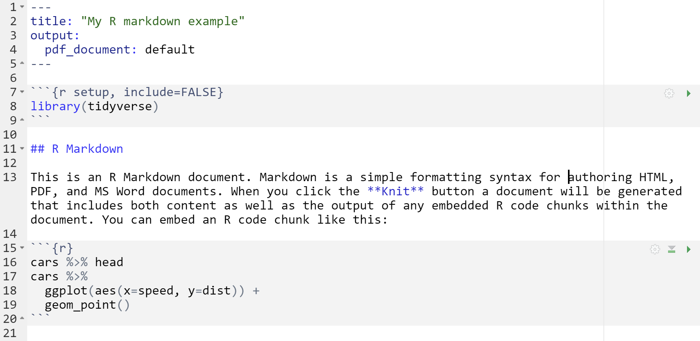
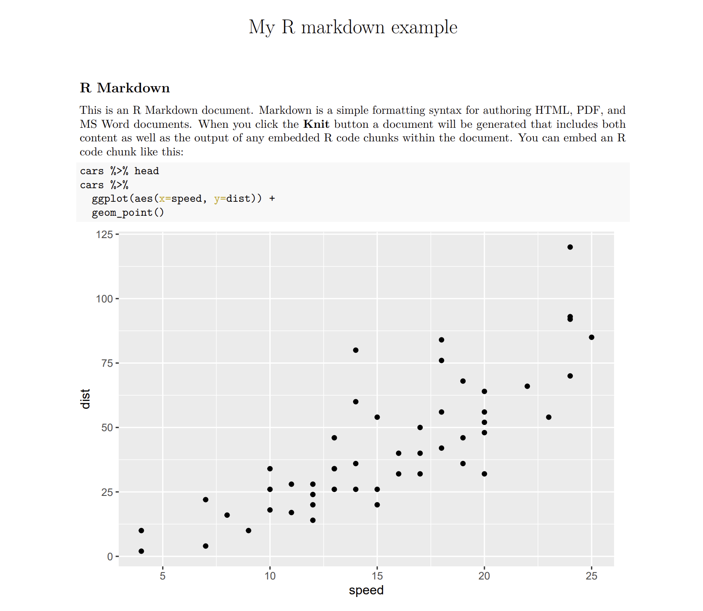

12 Rmarkdown
R markdown은 데이터를 분석하는 코드와 리포트를 동시에 수행할 수 있는 일종의 통합 문서입니다. 워드나 아래한글에서 프로그래밍과 데이터분석을 위한 코드를 작성할 수 있는 경우라고 생각해도 됩니다. Plain-text 기반의 markdown 문법을 사용하며 R markdown으로 작성된 문서는 HTML, PDF, MS word, Beamer, HTML5 slides, books, website 등 다양한 포멧의 출력물로 변환할 수 있습니다.
Image from rmarkdown.rstudio.com
Rmarkdown 웹사이트에 R markdown 소개 동영상과 R markdown 공식 사이트 메뉴얼 관련 서적 R markdown: The Definitive Guide를 참고하세요. 또한 R markdown을 사용할 때 cheatsheet를 옆에 두고 수시로 보면서 사용하시면 많은 도움이 될 수 있습니다.
12.1 R markdown의 기본 작동 원리
R markdown은 plain text 기반으로 작성되며 Rmd 라는 확장자를 갖는 파일로 저장됩니다. 다음과 같은 텍스트 파일이 Rmd 파일의 전형적인 예 입니다.

위 예제에서 네 가지 다른 종류의 컨텐츠를 볼 수 있습니다. 하나는 - - - 으로 둘러쌓인 내용으로 YAML 이라고 하며 JSON과 같은 데이터 직렬화를 수행하는 하나의 데이터 저장 포멧입니다. 백틱(`) ``` 으로 둘러쌓인 코드청그(Code Chunks)라고 하는 부분에는 R이나 python 등의 다양한 코드(실재 작동하는)를 넣어서 사용합니다. 그리고 ### 으로 표시된 글은 제목 글을 나타내며 나머지는 일반적인 텍스트를 나타냅니다.
이러한 R markdown 파일은 render라는 명령어로 원하는 포맷의 문서로 변환할 수 있습니다. 다음 예의 파일을 pdf 형식으로 rendering 하기 위해서는 YAML에 pdf 임을 명시하고 아래와 같이 render함수를 사용하면 됩니다. 또는 Rstudio 코드 입력창 상단의 Knit 버튼으로 pdf나 html 문서를 생성할 수 있습니다.

render("examples/test.Rmd", output_format = "pdf_document")
R markdown의 작동 원리는 Rmd 파일을 만든 후 render 함수를 부르면 knitr 소프트웨어가 R 코드를 실행시킨 후 markdown (.md) 파일을 생성합니다. 이 후 .md 파일을 pandoc 이라는 문서변환기가 원하는 문서 형태로 전환해 줍니다.
12.2 코드 입력
R markdown에서 사용하는 코드청크는 CTRL+ALT+I 단축키를 사용해서 넣을 수 있으며 다음과 같은 몇 가지 옵션으로 코드 스니펫들의 실행/숨김 여부를 결정할 수 있습니다.
include = FALSE: 코드는 실행되지만 보고서에 결과와 코드가 보여지지 않음echo = FALSE: 코드는 실행되고 보고서에 결과가 포함되지만 코드는 보여지지 않음eval = FALSE: 코드가 실행되지 않지만 보고서에 코드는 보여짐message = FALSE,warning=FALSE,error=FALSE: 코드에 의해서 발생되는 메세지/경고/에러가 보고서에 보여지지 않음fig.cap = "...": 코드로 그려지는 그래프에 캡션을 붙일 수 있음
코드청크 옵션 예시
# default
n <- c(1, 2, 3)
mean(n)## [1] 2# eval=FALSE
n <- c(1, 2, 3)
mean(n)## [1] 2R markdown에서는 r 을 사용해서 코드청크가 아닌 곳에 R 코드를 넣을 수 있습니다. 예를 들어 n은 1, 2, 3 값을 가지는 벡터 입니다. 또한 R 언어 외에도 Python, SQL, Bash, Rcpp, Stan, JavaScript, CSS 등의 다양한 프로그래밍 언어에 대해서도 지원합니다. 그런데 이러한 언어들이 사용 가능해지기 위해서는 해당 언어들을 실행해주는 엔진이 있어야 하며 python의 경우 reticulate 라는 패키지가 이러한 기능을 담당합니다. 이 패키지를 설치할 경우 miniconda라는 가상환경 및 데이터 분석을 위한 오픈소스 패키지가 자동으로 설치됩니다.
x = "hello, python in R"
print(x.split(' '))12.3 그래프 그리기
다음과 같이 R 코드청크를 이용해서 그래프를 그리고 그림 사이즈와 캡션 등을 설정할 수 있습니다.
mpg %>%
ggplot( aes(x=reorder(class, hwy), y=hwy, fill=class)) +
geom_boxplot() +
xlab("class") +
theme(legend.position="none")12.4 Markdown 문법
마크다운은 plain text 기반의 마크업 언어로서 마크업 언어는 태그 등을 이용해서 문서의 데이터 구조를 명시하는데 이러한 태그를 사용하는 방법 체계를 마크업 언어라고 합니다. 가장 대표적으로 html 이 있습니다.
<html>
<head>
<title> Hello HTML </title>
</head>
<body>
Hello markup world!
</body>
</html>
마크다운도 몇 가지 태그를 이용해서 문서의 구조를 정의하고 있으며 상세한 내용은 Pandoc 마크다운 문서를 참고하시기 바랍니다. 마크다운언어의 철학은 쉽게 읽고 쓸 수 있는 문서입니다. plain text 기반으로 작성되어 쓰기 쉬우며 (아직도 사람들이 메모장 많이 사용하는 이유와 같습니다) 태그가 포함되어 있어도 읽는데 어려움이 없습니다. html 언어와 rmd 파일의 예를 보시면 그 철학을 어렵지 않게 알 수 있습니다.
마크다운에서는 Enter를 한 번 입력해서 줄바꿈이 되지 않습니다. <br> 또는 문장 마지막에 공백을 두 개 입력하면 되겠습니다.
이 문장은 줄바꿈이 되지 않습니다
이 분장은 줄바꿈이
됩니다
마크다운 테그를 몇 가지 살펴보면 먼저 # 을 붙여서 만드는 header 가 있습니다.
# A level-one header
## A level-two header
### A level-three header# A level-one header {#l1-1}
## A level-two header {#l2-1}
### A level-three header {#l3-1}
# A level-one header {#l1-2}
## A level-two header {#l2-2}
### A level-three header {#l3-2}Block quotations
This is block quote. This paragraph has two lines
This is a block quote. This paragraph has two lines.
This is a block quote.
A block quote within a block quote.
code with five spaces
Italic
Bold
이미지를 직접 삽입하고 가운데 정렬합니다.
자동차 모델에 따른 고속도로 연비 분포
- 첫 번째
- 두 번째
- 세 번째
- 아이템 1
- 아이템 2
- 아이템 3
- 아이템 3-1
- 아이템 3-2
소스코드 그대로 표현하기 위해서는 ~~~ 를 사용합니다.
<div>
소스코드
</div>12.5 YAML 헤더
R markdown 파일에서 YAML의 가장 중요한 기능은 output 포멧을 지정하는 것이며 title, author, date, 등을 설정할수도 있습니다.
---
layout: page
title: "데이터사이언스를 위한 R프로그래밍"
subtitle: "R markdown 활용법"
output:
html_document:
css: style.css
includes:
in_header: header.html
after_body: footer.html
theme: default
toc: yes
toc_float: true
highlight: tango
code_folding: show
number_sections: TRUE
mainfont: NanumGothic
---12.6 Output format
주요 문서 포멧으로 다음과 같은 몇 가지가 있습니다. 상세한 내용은 Rmarkdown output format을 참고하시기 바랍니다.
- html_document - HTML document w/ Bootstrap CSS
- pdf_document - PDF document (via LaTeX template)
- word_document - Microsoft Word document (docx)
- ioslides_presentation - HTML presentation with ioslides
- beamer_presentation - PDF presentation with LaTeX Beamer
- powerpoint_presentation: PowerPoint presentation